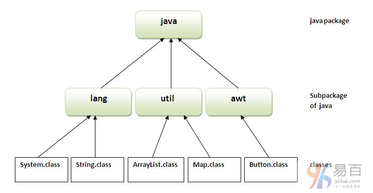
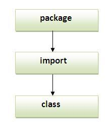
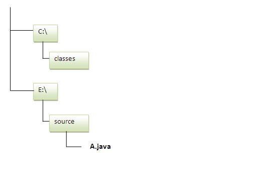

☰ 目录
39 包
一个java包是一组相似类型的类，接口和子包。java中的包可以分为两种形式，内置包和用户定义包。
java中有很多内置的包，如：java，lang，awt，javax，swing，net，io，util，sql等。
在这里，我们将详细学习创建和使用用户定义的包。
Java包的优点
- Java包用于对类和接口进行分类，以便更好地维护它们。
- Java包提供访问保护。
- Java包消除命名冲突。

java包的简单示例
package关键字用于在java中创建一个包。
//save as Simple.java
package com.yiibai;
public class Simple {
public static void main(String args[]) {
System.out.println("Welcome to package");
}
}
如何编译java包
如果您没有使用任何IDE，则需要遵循以下语法：
javac -d directory javafilename
例如
javac -d . Simple.java
-d 指定放置生成的类文件的目标位置。 您可以使用任何目录名称，如/home(在Linux的情况下)，D:\workspace(在Windows的情况下)等。如果想保持包在同一目录，可以使用.(点)表示当前目录。
如何运行java包程序
您需要使用完全限定(指定)名称。如：com.yiibai.Simple等来运行类。
编译：javac -d . Simple.java
运行：java com.yiibai.Simple
输出结果如下 -
Welcome to package
-d是一个开关，它告诉编译器放置类文件的位置，即它代表目的地。 .(点符号)表示当前文件夹。
如何从一个包中访问另一个包？
有三种方法从包外部来访问一个包。它们分别如下 -
- import package.*;
- import package.classname;
- 完全限定名
1. 使用 packagename.
如果使用package.*，那么这个包的所有类和接口都是可访问的，而不是子包。
import关键字用于使当前包可访问的另一个包的类和接口。
导入packagename的包的示例。
一个Java文件：A.java，在 pack 包下。
//save by A.java
package pack;
public class A{
public void msg(){System.out.println("Hello");}
}
另一个Java文件：B.java，在 mypack 包下，下面看看它是如何引用 pack 包中的 A.java 这个类。
//save by B.java
package mypack;
import pack.*;
class B{
public static void main(String args[]){
A obj = new A();
obj.msg();
}
}
执行上面代码，输出结果如下 -
Hello
2. 使用packagename.classname
如果要导入package.classname，那么只有这个包的类声明为可访问的。
通过导入package.classname的包的示例
以下是 A.java 文件中的代码 -
//save by A.java
package pack;
public class A{
public void msg(){System.out.println("Hello");}
}
以下是 B.java 文件中的代码 -
//save by B.java
package mypack;
import pack.A; /// import 具体的类名
class B {
public static void main(String args[]) {
A obj = new A();
obj.msg();
}
}
执行上面代码，输出结果如下 -
Hello
3. 使用完全限定名
如果使用完全限定名，那么只有这个包的声明类将可访问。现在没有必要导入，但是需要在每次访问类或接口时使用完全限定名。
它通常用于两个包具有相同类名的情况。 java.util和java.sql包包含Date类。
通过导入完全限定名称的包的示例
创建一个Java文件：A.java，其代码如下所示 -
//save by A.java
package pack;
public class A {
public void msg() {
System.out.println("Hello");
}
}
创建另一个Java文件：B.java，其代码如下所示 -
//save by B.java
package mypack;
class B {
public static void main(String args[]) {
pack.A obj = new pack.A();// using fully qualified name
obj.msg();
}
}
执行上面代码，得到以下结果 -
Hello
注意：如果导入包，则不会导入子包。
如果导入包，则将导入该包的所有类和接口，但不包括子包的类和接口。 因此，您还需要导入子包。
注意：程序的序列必须先是包，然后再导入类。

在java中的子包
包内的包称为子包。创建它用以进一步分类包。
举个例子，Sun Microsystem定义了一个名为java的包，其中包含了很多类，比如System，String，Reader，Writer，Socket等。 Reader和Writer类用于输入/输出操作，Socket和ServerSocket类用于网络等等。 所以，Sun已经将java包子类化为子包，如：lang，net，io等，并将输入/输出相关类放在io包中，将Server和ServerSocket类放在net包中等等。
注：定义包的标准是domain.company.package,例如：com.yiibai.bean或org.apache.dao。
子包示例
package com.yiibai.core;
class Simple {
public static void main(String args[]) {
System.out.println("Hello subpackage");
}
}
编译执行的命令：javac -d . Simple.java
运行执行的命令：java com.yiibai.core.Simple
Hello subpackage
如何将类文件发送到另一个目录或驱动器？
有一个场景，想要把A.java源文件的类文件放在C 盘的classes文件夹中。 例如：

首先在 E:\source 目录中创建 A.java 文件，如下代码 -
//save as Simple.java
package mypack;
public class Simple {
public static void main(String args[]) {
System.out.println("Welcome to package");
}
}
编译：
E:\sources> javac -d c:\classes Simple.java
运行：
要在E:\source目录运行此程序，需要设置类文件所在目录的类路径。
e:\sources> set classpath=c:\classes;.;
e:\sources> java mypack.Simple
另一种方式运行这个程序通过 -classpath切换java：
-classpath切换可以与javac和java工具一起使用。
要在E:\source目录运行此程序，可以使用java的-classpath选项，告诉在哪里查找类文件。 例如：
e:\sources> java -classpath c:\classes mypack.Simple
执行上面代码，得到以下结果 -
Welcome to package
加载类文件或jar文件的方式
有两种方法用来临时和永久加载类文件。
- 加载临时类文件
- 通过在命令提示符中设置类路径
- 通过
-classpath 开关选项
- 永久加载类文件
- 通过在环境变量中设置类路径
- 通过创建jar文件，其中包含所有类文件，并将jar文件复制到JDK安装目录的
jre/lib/ext文件夹中。
规则：在java源文件中只能有一个公共类，它必须以公共类的名称保存。
//save as C.java otherwise Compilte Time Error
class A {
}
class B {
}
public class C {
}
如何将两个公共类放在包中？
如果想把两个公共类放在同一个包中，有两个java源文件都包含一个公共类，只需保持包名称相同即可。 例如：
文件：A.java，代码如下所示 -
//save as A.java
package yiibai;
public class A{}
文件：B.java，代码如下所示 -
//save as B.java
package yiibai;
public class B{}